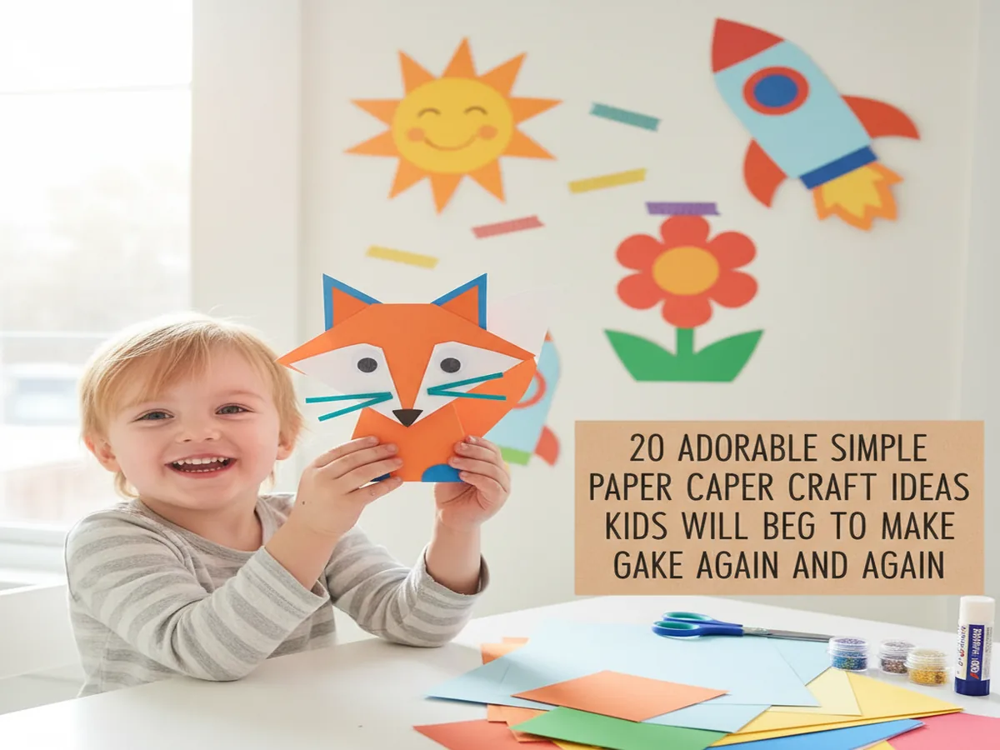
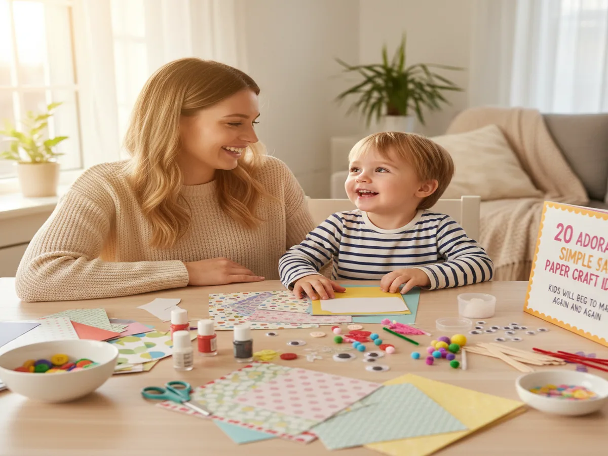
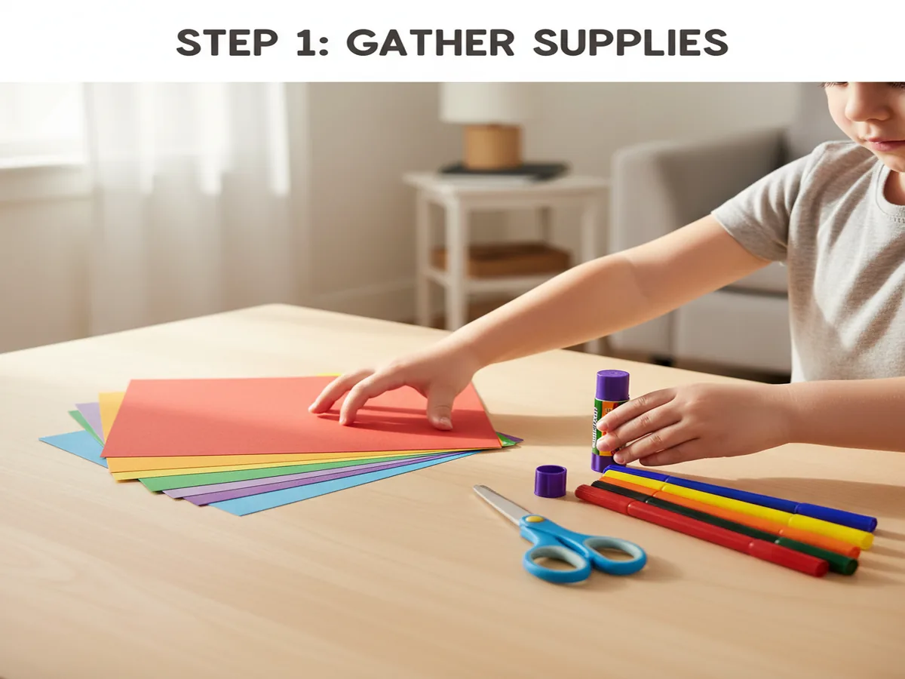
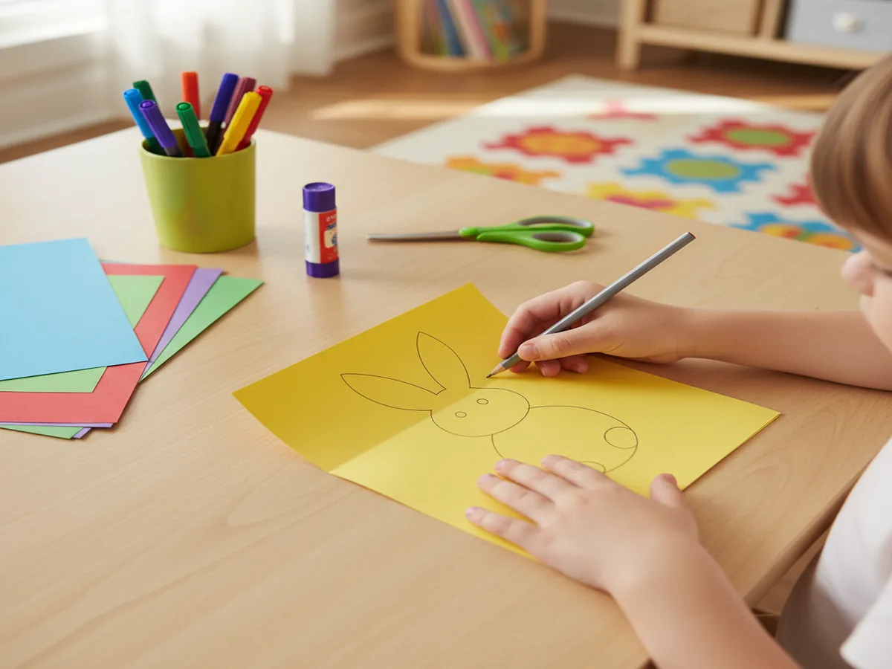
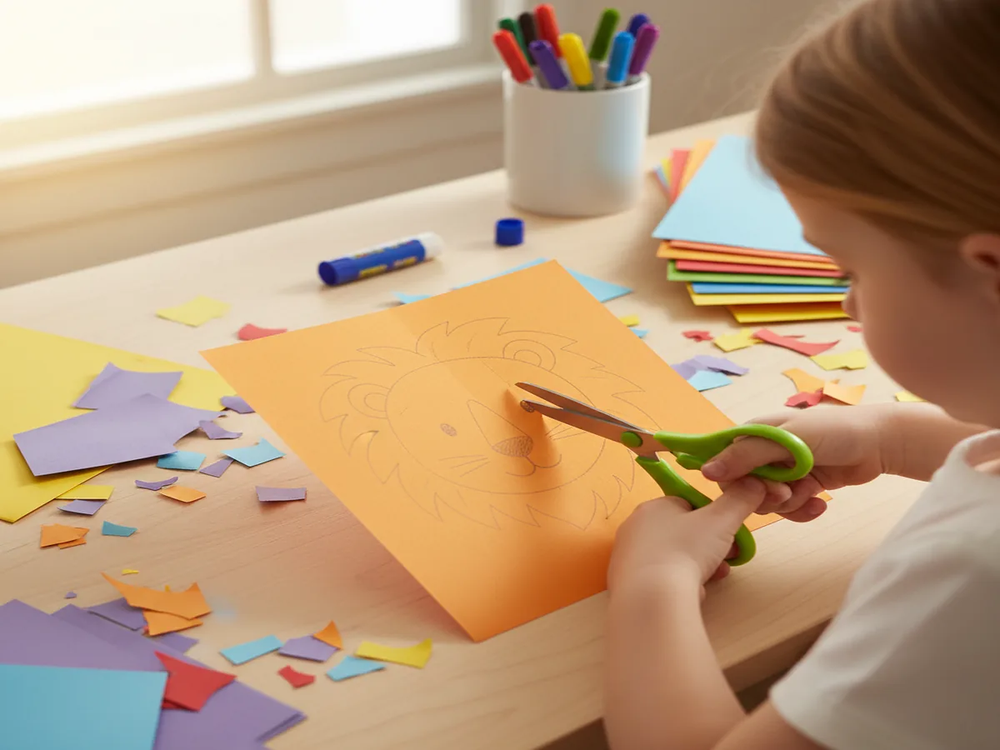
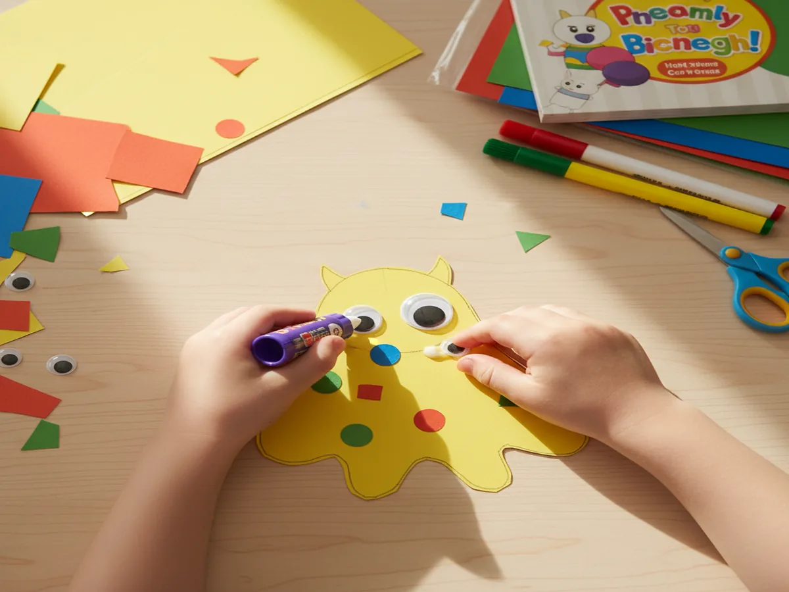
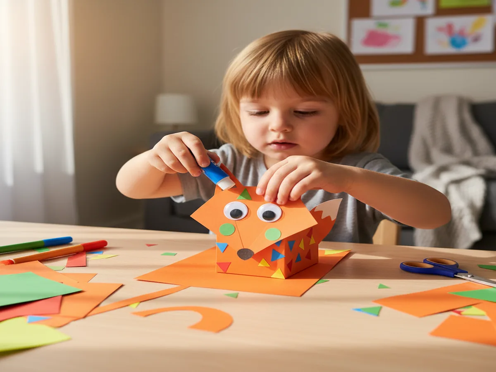

Whether you have a stack of construction paper and 20 free minutes or a whole afternoon together, there is a simple paper craft here for every age and energy level. We rounded up 20 of our favorite ideas, from paper plate animals to accordion worms and colorful paper flowers, all made with supplies you already have at home. Pick one, grab some scissors, and let the creating begin.
What You'll Need
- Construction paper or cardstock, assorted colors
- Scissors (child-safe for little ones)
- Glue stick or white glue
- Markers or crayons
- Optional: googly eyes, pom-poms, pipe cleaners
1. Paper Plate Animal Face
A paper plate makes a perfect blank canvas for an animal face waiting for ears, eyes, and a nose. Kids pick their favorite animal, cut features from construction paper, glue everything onto the plate, and add marker details to finish. Paper plate animal crafts look impressive but take almost no skill to pull off, which is exactly why kids love them. Cats, dogs, bears, and bunnies are always a hit.
Age: 3+ | Time: 15 min | Mess: Low
2. Paper Chain Caterpillar
Cut strips of construction paper in different colors, loop them into circles, and link each ring through the last to build a chain. Add a face to the first circle and pipe cleaner antennae to finish the head. This is a wonderful activity for toddlers who are just learning to use glue and love the satisfying snap of each new ring clicking into place. The caterpillar can be as short or as long as the afternoon allows.
Age: 3+ | Time: 20 min | Mess: Low
3. Accordion-Fold Worm
Lay two strips of paper perpendicular and fold them over each other in turn, back and forth, all the way to the end. The result is a springy, stretchy body that kids absolutely love to bounce and wiggle. Add a paper circle face with marker eyes and a tiny paper tongue. This classic folding trick teaches basic skills in the most playful way possible, and kids usually want to make three or four in a row.
Age: 4+ | Time: 15 min | Mess: Low
4. Construction Paper Butterfly
Fold a sheet of colorful paper in half and draw a simple wing shape along the fold. Cut it out, unfold, and you have perfectly symmetrical wings in one step. Add a second contrasting color layer for spots or stripes, glue on a paper body, and draw a smiling face. Easy paper crafts like this one always turn out beautifully, even for the youngest crafters, because the symmetry does all the hard work for them.
Age: 3+ | Time: 20 min | Mess: Low

5. Paper Bag Puppet
A brown paper lunch bag becomes a puppet with just a few paper scraps and a glue stick. The fold at the base of the bag opens and closes to form a mouth, which kids find immediately hilarious. Cut ears, teeth, a tongue, and a face from construction paper and layer them on. Once it is dry, slide a hand inside and your child has a puppet friend they made entirely by themselves.
Age: 3+ | Time: 20 min | Mess: Low
6. Paper Flower Bouquet
Cut petals from pastel construction paper and a long green stem. Let kids arrange the petals in a circle around a small circle center and glue them down. Stack two or three layers of petals in different sizes for a fuller bloom. Make five or six and wrap them together with a pipe cleaner for a bouquet that never wilts. This simple paper craft idea is lovely for Mother's Day or any day a little one wants to surprise someone.
Age: 4+ | Time: 25 min | Mess: Low

7. Paper Pinwheel
Cut a square of paper, draw a diagonal line from each corner stopping just before the center, fold every other point into the middle, and push a brad through to hold it all together. Blow and watch it spin. This is one of the most satisfying paper craft ideas for kids because the finished result actually does something. Children who have never tried a pinwheel are always delighted to realize they just made a toy, not just a piece of art.
Age: 5+ | Time: 20 min | Mess: Low
8. Paper Crown
Cut a long strip of yellow or gold construction paper, then cut triangles or zigzags along one edge. Wrap it to fit your child's head and tape the ends together. Add jewel stickers, crayon details, or glued-on gems to decorate. Paper crowns take about 10 minutes to make and the resulting joy lasts the entire day. Every child should wear a crown at least once, and this one can be made in any color for any occasion.
Age: 3+ | Time: 15 min | Mess: Low
9. Paper Bookmark
Cut a thick rectangle from cardstock and let kids decorate both sides with markers or stickers. Add a tassel made from a folded strip of paper at the top, then laminate with clear tape if you want it to last. These make wonderful gifts for teachers, grandparents, or any reader in the family. A quick paper craft project like this one comes with a practical result kids feel genuinely proud to give.
Age: 3+ | Time: 15 min | Mess: Low
10. Paper Fish
Cut a large oval body and a triangular tail, then cut small circles for scales in three or four colors. Layer the scales from tail to head, overlapping slightly like real fish scales. Glue on a googly eye and draw a mouth with a marker. Paper fish look gorgeous displayed in a window where the light shines through them. Make a whole school in different sizes for a stunning wall display that stays up all season.
Age: 3+ | Time: 20 min | Mess: Low

11. Torn Paper Mosaic
Instead of scissors, tear paper into small rough pieces and glue them in a pattern or picture onto a background sheet. Toddlers who struggle with scissors thrive at this one because there is no wrong way to tear paper. Choose a simple subject like a sun, a house, or a rainbow and fill it in with torn paper in the right colors. The textured result looks like a real work of art and always earns big compliments from everyone who sees it.
Age: 3+ | Time: 25 min | Mess: Low
12. Paper Snowflake
Fold a square piece of paper in half, then in half again, then fold one corner across to make a triangle. Cut small shapes along all the edges and unfold to reveal the snowflake. No two ever look the same, which is the magic of it. Paper snowflakes are a classic simple paper craft for winter or any time a child wants to feel like a real artist. Hang them in a window or from the ceiling with a piece of thread.
Age: 5+ | Time: 20 min | Mess: Low
13. Paper Sun
Cut a large yellow circle and a set of long and short triangles for rays. Glue the rays behind the circle so they peek out all around it, then draw a sleepy or cheerful face in the middle. The layers give it real dimension and it looks like a professional wall decoration when hung on a door or window. A paper sun is one of those easy paper crafts for kids that every child returns to again and again because the results always bring smiles.
Age: 3+ | Time: 20 min | Mess: Low

14. Paper Kite
Cut a diamond from bright paper, draw string lines from each corner to the center, and add a tail of looped paper strips at the bottom. Attach a real piece of string and let kids run with it on a breezy day. Even indoors, a paper kite looks so cheerful that it makes a great wall decoration. This is one of those paper craft ideas that doubles as an outdoor activity and a beautiful keepsake to bring home.
Age: 4+ | Time: 25 min | Mess: Low
15. Paper Airplane
Fold a sheet of paper in half lengthwise, fold the top corners down to meet the center crease, fold the wings down, and launch. Every child should learn the classic dart, and once they do they will experiment endlessly with different fold angles and throws. Write the child's name on the wings and decorate with a marker for a personal touch. Paper airplanes are the original simple craft that kids never outgrow and parents secretly love making too.
Age: 5+ | Time: 10 min | Mess: Low
16. Paper Bird
Fold a square of paper diagonally to make a triangle, then fold the two outer corners up to form wings. Pinch the center and fan the wings open slightly. Glue on a small paper beak and a round eye. Hang it from the ceiling with thread so it appears to soar above the room. A paper bird is a wonderful paper craft project for kids that looks complex but can be finished in under 20 minutes with anyone who can follow basic folding steps.
Age: 5+ | Time: 20 min | Mess: Low
17. Paper Fortune Teller
Fold a square into the classic fortune teller shape, write numbers and colors on the outside flaps, and hide silly fortunes or compliments inside each inner flap. Kids love making them almost as much as they love using them. Older siblings can make one for a younger child as a special handmade gift. This timeless playground craft teaches symmetry, counting, and the pure joy of surprising a friend with something you created yourself.
Age: 6+ | Time: 20 min | Mess: Low

18. Paper Envelope Card
Fold a square of paper in a simple envelope pattern and tuck in a folded note decorated by your child. This works beautifully as a birthday card, a thank-you note, or a totally random act of sweetness for a grandparent. Let kids decorate the outside of the envelope with stickers, stamps, or their own drawings. A handmade paper craft card turns a few minutes of effort into a treasured memory for whoever is lucky enough to receive it.
Age: 4+ | Time: 20 min | Mess: Low
19. Paper Fan
Accordion-fold a full sheet of construction paper from top to bottom, pinch one end, and secure it with a strip of tape or a pipe cleaner. Fan out the other end and you have a working paper fan. Decorate the sections with stripes, patterns, or flowers before folding for a beautiful finished look. This is one of those satisfying crafts kids love in summer, and it also makes a gorgeous wall decoration that works beautifully all year long.
Age: 3+ | Time: 15 min | Mess: Low
20. Paper Rainbow
Cut six arching strips in red, orange, yellow, green, blue, and purple and layer them from largest to smallest, gluing each on top of the one before it. Add white cotton ball clouds at each end to finish. The result is bright, cheerful, and perfect for spring or any rainy day that needs a little color. Simple paper craft ideas like this one delight kids every single time, and the whole process takes less than 30 minutes from start to finish.
Age: 3+ | Time: 25 min | Mess: Low

Any one of these 20 simple paper craft ideas is enough to turn an ordinary afternoon into a memory. Grab whatever is on hand and just start.